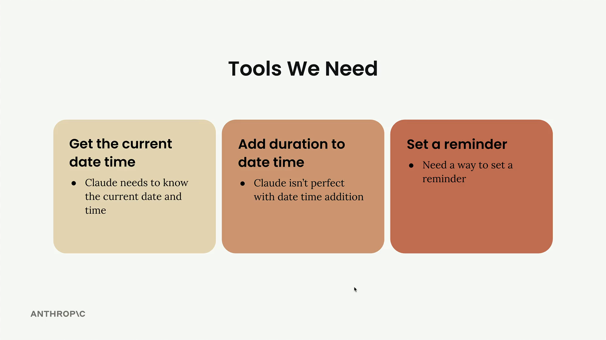
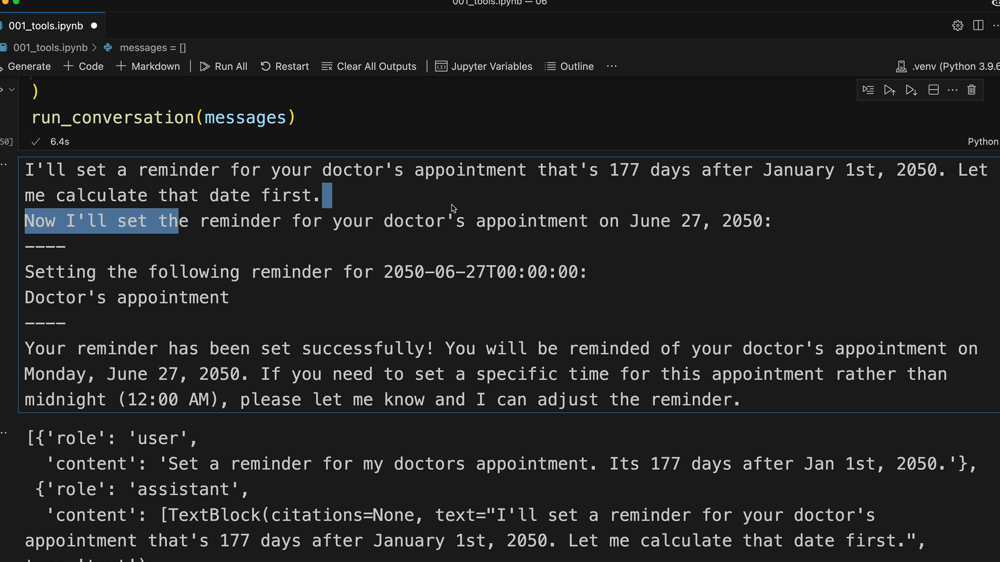
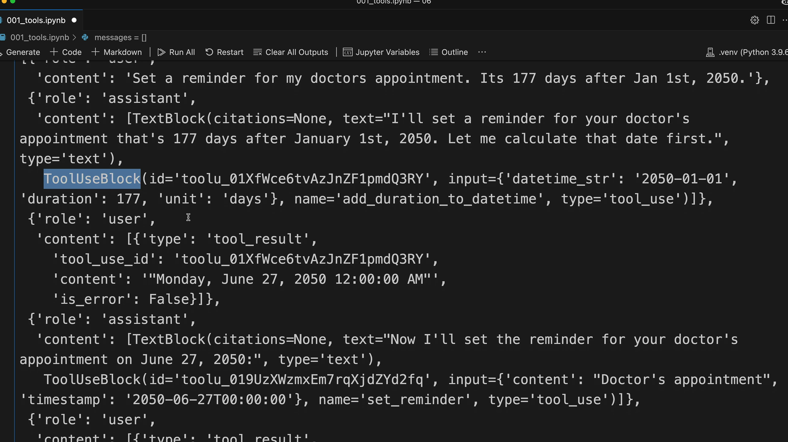

여러 도구 사용하기
핵심 도구 처리 인프라가 갖춰지면 Claude 구현에 여러 도구를 추가하는 것은 간단해집니다. 이 튜토리얼에서는 간단한 패턴을 따라 추가 도구를 통합하는 방법을 보여줍니다.

추가할 도구들
리마인더 시스템에는 세 가지 주요 기능이 필요합니다:
- 현재 날짜 및 시간 가져오기 - Claude가 현재 날짜와 시간을 알아야 합니다
- 날짜 및 시간에 기간 추가 - Claude는 날짜 및 시간 덧셈에 완벽하지 않습니다
- 리마인더 설정 - 리마인더를 설정하는 방법이 필요합니다
다행히 구현 작업의 대부분은 이미 완료되어 있습니다. add_duration_to_datetime 함수와 set_reminder 함수가 해당 스키마와 함께 제공됩니다.
대화에 도구 추가하기
먼저, run_conversation 함수를 업데이트하여 tools 목록에 새 도구 스키마를 포함시킵니다:
response = chat(messages, tools=[
get_current_datetime_schema,
add_duration_to_datetime_schema,
set_reminder_schema
])이렇게 하면 대화 중에 사용할 수 있는 세 가지 도구 모두를 Claude에게 알려줍니다.
도구 라우터 업데이트
다음으로, run_tool 함수를 수정하여 새로운 도구 호출을 처리합니다. 각 새 도구에 대한 elif 케이스를 추가합니다:
def run_tool(tool_name, tool_input):
if tool_name == "get_current_datetime":
return get_current_datetime(**tool_input)
elif tool_name == "add_duration_to_datetime":
return add_duration_to_datetime(**tool_input)
elif tool_name == "set_reminder":
return set_reminder(**tool_input)패턴은 간단합니다: 도구 이름을 확인하고, 제공된 입력으로 해당 함수를 호출한 후 결과를 반환합니다.
여러 도구 사용 테스트
시스템을 테스트하려면 여러 도구가 필요한 요청을 시도해 보세요: "의사 진료 예약에 대한 리마인더를 설정해줘. 2050년 1월 1일로부터 177일 후야."
이 요청은 Claude가 다음을 수행하도록 강제합니다:
-
날짜 계산 (
add_duration_to_datetime사용) -
리마인더 설정 (
set_reminder사용)

Claude는 먼저 해야 할 일을 설명한 다음 순서대로 적절한 도구를 호출하여 이를 처리합니다. 대화에서 Claude가 목표 날짜로 2050년 6월 27일을 계산한 후 해당 날짜에 리마인더를 설정하는 것을 확인할 수 있습니다.
메시지 흐름 이해하기
대화 기록을 살펴보면 완전한 메시지 구조를 볼 수 있습니다:
- 요청이 담긴 사용자 메시지
- 텍스트와 도구 사용 블록을 모두 포함하는 어시스턴트 메시지
- 도구 결과 메시지
- 후속 어시스턴트 메시지

이는 Claude가 단일 메시지에 여러 블록을 포함할 수 있음을 보여줍니다 - 설명 텍스트와 도구 사용 요청을 결합합니다.
도구 추가를 위한 간단한 패턴
핵심 도구 인프라가 갖춰지면 새 도구를 추가할 때 이 패턴을 따릅니다:
- 도구 함수 구현 만들기
- 도구 스키마 정의
-
run_conversation의 tools 목록에 스키마 추가 -
run_tool에 도구에 대한 케이스 추가
이 모듈식 접근 방식을 사용하면 기존 코드를 재구성하지 않고도 AI 어시스턴트의 기능을 쉽게 확장할 수 있습니다. 각 새 도구는 기존 대화 흐름 및 도구 처리 로직과 원활하게 통합됩니다.